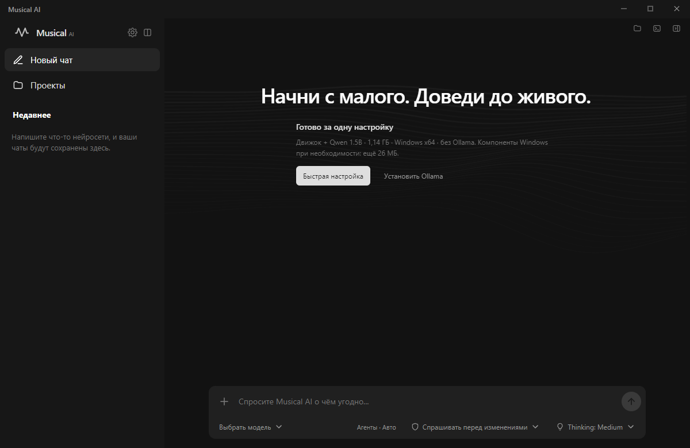

Модели на твоём ПК
Быстрая настройка загружает движок и первую модель. После загрузки локальная генерация работает без интернета и обязательной подписки.
Встроенный движок + OllamaОт первой мысли до готового результата.
Локальные модели, команда агентов и нужные инструменты — в одном приложении.
Windows x64 · Открытый репозиторий · Локальный запуск без подписки

01 / ВОЗМОЖНОСТИ
Выбирай модели и инструменты под задачу.
Musical AI объединяет их в одном рабочем пространстве.
Быстрая настройка загружает движок и первую модель. После загрузки локальная генерация работает без интернета и обязательной подписки.
Встроенный движок + OllamaКоординатор распределяет подходящие части задачи между специалистами. Ты видишь их работу, а основная модель собирает общий ответ.
До двух специалистов · Скорость зависит от модели и ПКПодключай MCP-серверы и инструкции Skills. Встроенный Workspace помогает модели читать твои проекты с учётом выбранного режима доступа.
MCP · Skills · Подтверждение действий02 / ВНУТРИ ПРИЛОЖЕНИЯ
Начни с локального чата. Подключай дополнительные возможности, когда они нужны.
Quick setup подготовит движок и Qwen 1.5B. Другие совместимые модели можно выбрать в каталоге.
Модели скачиваются отдельно. Крупным моделям нужно больше оперативной памяти.
03 / ТЫ УПРАВЛЯЕШЬ
Локальные запросы обрабатываются на твоём ПК. При выборе Cloud сообщения и приложенный контекст отправляются в Ollama — это явно обозначено в интерфейсе.
Выбери режим доступа к инструментам. В режиме планирования MCP-вызовы отключены; в режиме подтверждений ты видишь действие перед запуском.
Спокойный интерфейс, анимированная струна и Discord Activity. Настрой рабочее пространство под себя.
ГОТОВ К ПЕРВОЙ ИДЕЕ?
Установи Musical AI и выбери первую модель.
Скачать для WindowsВерсия 1.21.0 · Windows x64
macOS и Linux: готовые установщики пока не опубликованы.
Посмотреть исходный код и инструкции разработки ↗
ЕЩЁ ПАРА ВОПРОСОВ
Для локальной генерации обязательной подписки нет. Ollama Cloud — отдельный сервис со своими бесплатными лимитами, тарифами и оплатой на ollama.com.
Стартовая локальная модель может работать на CPU в Windows x64. Скорость и доступные размеры моделей зависят от процессора и памяти. Облачные модели не требуют локальной видеокарты.
Движок llama.cpp и Qwen 2.5 1.5B, примерно 1,14 ГБ загрузки. При необходимости также устанавливаются компоненты Microsoft Visual C++. Прогресс виден в приложении.
Создай обращение в GitHub Issues. Укажи версию приложения, выбранную модель и шаги воспроизведения.